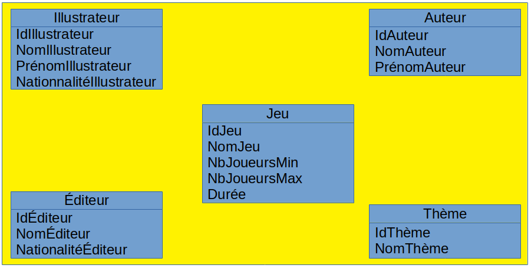
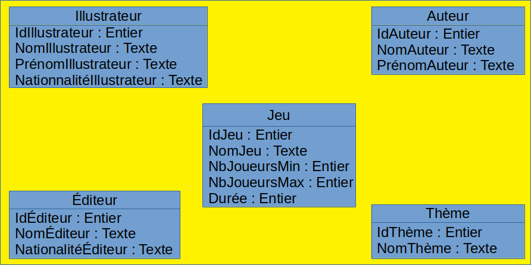
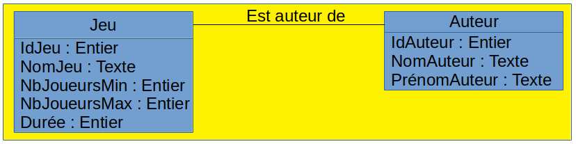
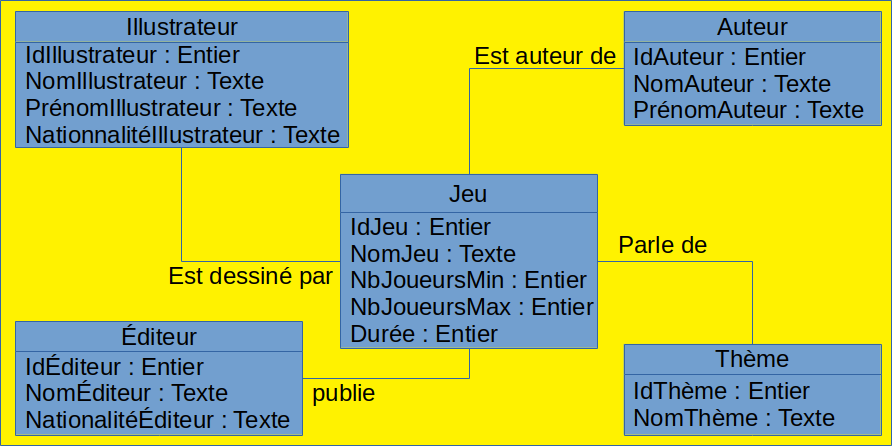
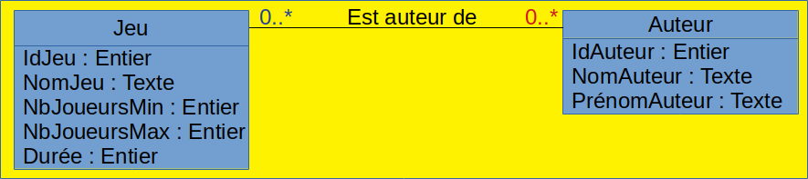
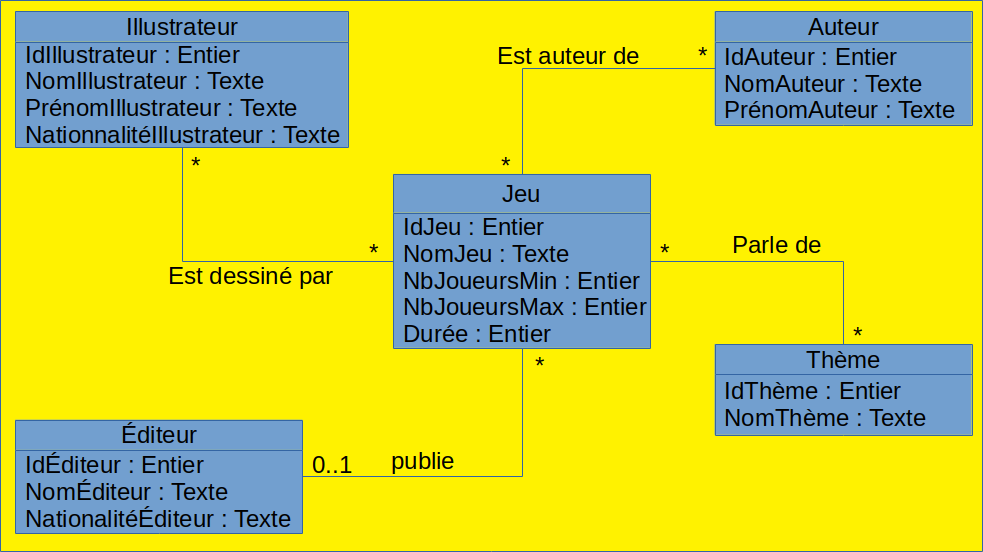
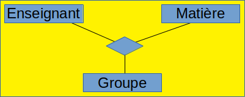
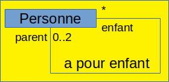
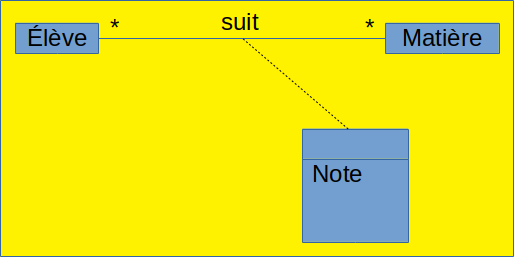

Modèle conceptuel d'une base de données relationnelle
I. Diagramme de classe
Une autre façon de modéliser le problème de la ludothèque présenté précédemment est d'établir un schéma conceptuel, en utilisant, au choix un modèle entité-association ou un diagramme de classes. Afin d'éviter de multiplier les formalismes, on s'orientera ici plutôt vers un diagramme de classe au format UML. Attention : si vous lisez des cours utilisant plutôt le modèle Entité-Association, vous risquez d'être surpris par l'endroit où sont notées les cardinalités (voir plus loin)... Faites donc bien attention à ne pas mélanger les 2 notations.
A. Représentation des classes
Sur un diagramme de classes, on représente chaque type de donnée de notre base sous la forme d'une classe, définie par un nom et par un ensemble d'attributs. Une première étape, dans la conception d'une base de données, consiste donc à recenser les types d'éléments que nous allons devoir manipuler et d'identifier leurs éléments.
Exercice 1 : Déterminer les types de données du problème de la ludothèque.
La base de donnée va manipuler a priori les types suivants :
- Jeu (NomJeu, NbJoueursMin, NbJoueursMax, Durée)
- Auteur (NomAuteur, PrénomAuteur)
- Éditeur (NomÉditeur, NationalitéÉditeur)
- Illustrateur (NomIllustrateur, PrénomIllustrateur, NationalitéIllustrateur)
Une autre solution, dont on pourra discuter, aurait été d'identifier également le type de donnée Nationalité Pour aboutir à l'ensemble d'entité suivant :
- Jeu (NomJeu, NbJoueursMin, NbJoueursMax, Durée)
- Auteur (NomAuteur, PrénomAuteur)
- Éditeur (NomÉditeur)
- Illustrateur (NomIllustrateur, PrénomIllustrateur)
- Nationalité (NomNationalité)
Pour chaque classe, on peut identifier un ensemble d'attributs constituant une clé minimale, mais il est plutôt recommandé (on pourra en re-discuter...) d'introduire un champ supplémentaire non significatif, typiquemenet un numéro, qui servira de clé. On peut alors représenter l'ensemble de nos classes sur un schéma comme le diagramme ci-dessous :

Ce schéma peut déjà être amélioré en déclarant les types des attributs :

B. Représentation des associations
1. Associations
Mais il est également indispensable de faire apparaître sur ce schéma les associations (ou relations) entre entités de chacune des classes. Ainsi, dans le cas de notre problème, il y a une association entre auteur et jeu pour représenter le fait qu'un jeu est écrit par un ou plusieurs auteurs. Une relation se notre par un trait nommé entre 2 classes. Par exemple, la relation entre Jeu et Auteur se représente ainsi :

Exercice 2 : Complétez le diagramme de classe complet avec toutes les associations nécessaires
On aboutit alors au schéma suivant. On notera que, si cela va de soit, il n'est pas nécessaire de préciser dans quel sens (orientation) il faut interpréter le nom de l'association :

2. Représentation des cardinalités
Sur le schéma obtenu dans l'exercice précédent, on constate que le fait qu'un jeu puisse avoir plusieurs auteurs, mais n'a qu'un seul illustrateur, n'apparaît pas. Il est en effet indispensable de rajouter, pour chaque association, les cardinalités la concernant.
Cela consite à préciser, sur le schéma, pour chaque association entre 2 classes A et B, à combien d'instances de B peut être reliée chaque instance de A, et à combien d'instances de A peut être reliée chaque instance de B. Les cardinalités sont alors inscrites sur le schéma à l'extrémité de chaque association sous la forme d'un intervalle. Les cardinalités les plus classiques sont les suivantes :- 1..* : au moins 1
- 0..* : un nombre quelconque (souvent noté *)
- 0..1 : au plus 1
- 1..1 : exactement 1 (souvent noté 1)
La définition des cardinalités est une travail essentiel, qui nécessite de bien réfléchir au problème :
- Des cardinalités trop souples risquent d'autoriser la création d'une base non cohérente ;
- Des cardinalités trop strictes risquent d'empêcher de modéliser certains cas non envisagés au départ, ou de bloquer l'évolution de la base.
Par ailleurs, la définition des cardinalités dépend également fortement du cahier des charges. Ainsi, dans notre problème, nous avons précisé qu'un jeu n'avait qu'un seul éditeur. Mais dans la réalité, certains jeux son co-édités par plusieurs éditeurs.
Illustrons la définition des cardinalités sur la relation entre Jeu et Auteur :
- Combien un jeu peut-il avoir d'auteurs au maximum ? Plusieurs (c'est par exemple le cas du jeu Les chevaliers de la table ronde) ;
- Combien un jeu peut-il avori d'auteurs au minimum ? On pourrait être tenté de répondre 1, mais il faut envisager tous les cas possibles. Or si on prend le cas du jeu d'échecs, par exemple, il est impossible d'associer un auteur à ce jeu. Il faut donc prévoir qu'un jeu peut ne pas avoir d'auteur dans la base. La réponse est donc 0 ;
- Combien de jeux un auteur peut-il avoir créés au maximum ? Plusieurs (C'est par exemple le cas de Serget Laget) ;
- Combien de jeux un auteur peut-il avoir créés au minimum ? On pourrait répondre 1, car il apparaît illogique de définir (et de gérer) comme Auteur de jeu quelqu'un qui n'a créé aucun des jeux de notre base, mais cela compliquerait la saisie (il apparaît raisonnable de pouvoir créer des auteurs avant de les associer à des jeux). Du coup, on préférera donner comme réponse 0.
La représentation complète de l'association entre les tables Jeu et Auteur devient alors :

Exercice 3 : Complétez le diagramme de classe en rajoutant les cardinalités

II. Du diagramme de classes au modèle relationnel
Pour transformer un diagramme de classes en schémas de relation, il faut procéder en plusieurs étapes :
- Créer un schéma de relation par classe ;
- Pour chaque association N-M (c'est-à-dire dont les 2 cardinalités maximales sont "*"), créer un schéma de relation SR dont les attributs sont ceux apparaissant dans les clés des schémas de relations associés aux classes participant à l'association. La clé de SR est composée de l'ensemble des attributs y figurant;
- Pour chaque association 1-N (c'est-à-dire dont la cardinalité minimale est "1" et la maximale "*"), créer un schéma de relation SR dont les attributs sont ceux apparaissant dans les clés des schémas de relations associés aux classes participant à l'association. La clé de SR est composée des mêmes attributs que ceux de la clé du schéma de relation associé à la classe se trouvant du "côté *" de l'association;
- Fusionner les schémas de relation de mêmes clés.
- NB:A l'issue de ce processus, considérons l'ensemble ATT des attributs non-clef portant le même nom que des attributs clefs dans d'autres tables. Soit un attribut a de ATT et l'attribut clef a' portant le même nom et clef dans une autre table. Les valeurs de a doivent obligatoirement appartenir à l'ensemble des valeurs prises par a'.
Exemple : l'attribut idEditeur de la relation Jeu doit avoir des valeurs appartenant à l'ensemble des valeurs prises par l'attribut idEditeur dans la relation Editeur.
Pour représenter cela pour le moment dans le modèle relationnel, les noms des attributs de ATT sont précédés par un #.
Exercice 4 : Transformez le diagramme de classes obtenu à l'exercice 3 en schémas de relation.
En suivant les différentes étapes, on obtient :
- Étape 1 : On obtient les relations suivantes :
- Illustrateur(IdIllustrateur, NomIllustrateur, PrénomIllustrateur, NationalitéIllustrateur)
- Auteur(IdAuteur, NomAuteur, PrénomAuteur)
- Éditeur(IdÉditeur, NomÉditeur, NationalitéÉditeur)
- Thème(IdThème, NomThème)
- Jeu(IdJeu, NomJeu, NJoueursMin, NbJoueursMax, Durée)
- Étape 2 : On rajoute les relations suivantes :
- EstDessinéPar(#IdIllustrateur, IdJeu)
- EstAuteurDe(#IdAuteur,#IdJeu)
- ParleDe(#IdThème,#IdJeu)
- Étape 3 : Il faut encore ajouter la relation suivante :
- Publie(#IJeu, #IdÉditeur)
- Étape 4 : on fusionne les tables de mêmes clés (ici, Jeu et Publie) et on obtient au final l'ensemble suivant de relations :
- Illustrateur(IdIllustrateur, NomIllustrateur, PrénomIllustrateur, NationalitéIllustrateur)
- Auteur(IdAuteur, NomAuteur, PrénomAuteur)
- Éditeur(IdÉditeur, NomÉditeur, NationalitéÉditeur)
- Thème(IdThème, NomThème)
- Jeu(IdJeu, NomJeu, NJoueursMin, NbJoueursMax, Durée, #IdÉditeur)
- EstDessinéPar(#IdIllustrateur, #IdJeu)
- EstAuteurDe(#IdAuteur, #IdJeu)
- ParleDe(#IdThème, #IdJeu)
Exercice 5 : Donnez le contenu des tables établies dans l'exercice précédent permettant de représenter les données du problème initial
| Illustrateur | |||
|---|---|---|---|
| IdIllustrateur | NomIllustrateur | PrénomIllustrateur | NationalitéIllustrateur |
| 1 | Delval | Julien | Française |
| 2 | Coimbra | Miguel | Française |
| 3 | Quilliams | Chris | Canadienne |
| 4 | Balixa | Bruno | Américaine |
| 5 | Alsop | Dave | Américaine |
| 6 | Torres | Francisco Rico | Américaine |
| Auteur | ||
|---|---|---|
| IdAuteur | NomAuteur | PrénomAuteur |
| 1 | Laget | Serge |
| 2 | Cathala | Bruno |
| 3 | Leackock | Matt |
| 4 | Person | Paul |
| Éditeur | ||
|---|---|---|
| IdÉditeur | NomÉditeur | NationalitéÉditeur |
| 1 | Days of wonder | Française |
| 2 | EggertSpiele | Allemande |
| 3 | Iello | Française |
| Thème | |
|---|---|
| IdThème | NomThème |
| 1 | Moyen-âge |
| 2 | Légende arthurienne |
| 3 | Marché noir |
| 4 | Navigation marchande |
| 5 | Médiéval |
| 6 | Construction |
| 7 | Fantastique |
| 8 | Monstre |
| 9 | Pirate |
| Jeu | |||||
|---|---|---|---|---|---|
| IdJeu | NomJeu | NbJoueursMin | NbJoueursMax | Durée | IdEditeur |
| 1 | Les chevaliers de la table ronde | 3 | 7 | 90 | 1 |
| 2 | Cargo noir | 2 | 5 | 60 | 1 |
| 3 | Era: medieval age | 1 | 4 | 50 | 2 |
| 4 | Smash up | 2 | 4 | 45 | 3 |
| EstDessinéPar | |
|---|---|
| IdIllustrateur | IdJeu |
| 1 | 1 |
| 2 | 2 |
| 3 | 3 |
| 4 | 4 |
| 5 | 4 |
| 6 | 4 |
| EstAuteurDe | |
|---|---|
| IdAuteur | IdJeu |
| 1 | 1 |
| 2 | 1 |
| 1 | 2 |
| 3 | 3 |
| 4 | 4 |
| ParleDe | |
|---|---|
| IdThème | IdJeu |
| 1 | 1 |
| 2 | 1 |
| 3 | 2 |
| 4 | 2 |
| 5 | 3 |
| 6 | 3 |
| 7 | 4 |
| 8 | 4 |
| 9 | 4 |
III. Pour aller plus loin avec les associations
A. Associations entre plus de 2 classes
Dans certains cas on peut avoir à considérer une association entre plusieurs classes. C'est par exemple le cas si je veux pouvoir représenter quel enseignant enseigne quelle matière à quel groupe. Celà se représente ainsi :

N.B. : Cela n'est pas redondant ni équivalent avec l'éventuelle représentation des associations 2 à 2 entre chacune de ces classes.
B. Associations réflexives
Une relation peut relier 2 entités d'une même classe. C'est le cas par exemple d'une relation qui exprimerait un lien de parenté entre 2 personnes. On peut alors indiquer des rôles aux extrémités de la relation pour clarifier l'interprétation des cardinalités :

C. Plusieurs associations entre mêmes classes
Il peut très bien y avoir plusieurs associations reliant 2 mêmes classes. Dans ce cas-là, on représente chacune des associations avec son nom et ses cardinalités.
D. Attributs d'association
Considérons une base de données consistant à stocker les moyennes des élèves pour chaque matière. L'attribut Note ne peut être dans la classe Élève, car dans ce cas un élève ne pourrait avoir qu'une seule moyenne, quelle que soit la matière. Mais il ne peut pas non plus faire partie de la classe Matière, car dans ce cas, il n'y aurait qu'une seule moyenne par matière, quel que soit l'élève. L'attribut Note doit être un attribut de l'association entre Élève et Matière ; ainsi, pour chaque couple (élève, matière), on pourra avoir une moyenne. Cela se représente ainsi :

N'hésitez pas, lors du cours, à poser des questions sur la traduction des attributs d'association lorsque l'on passe au modèle relationnel
.